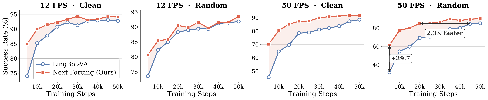
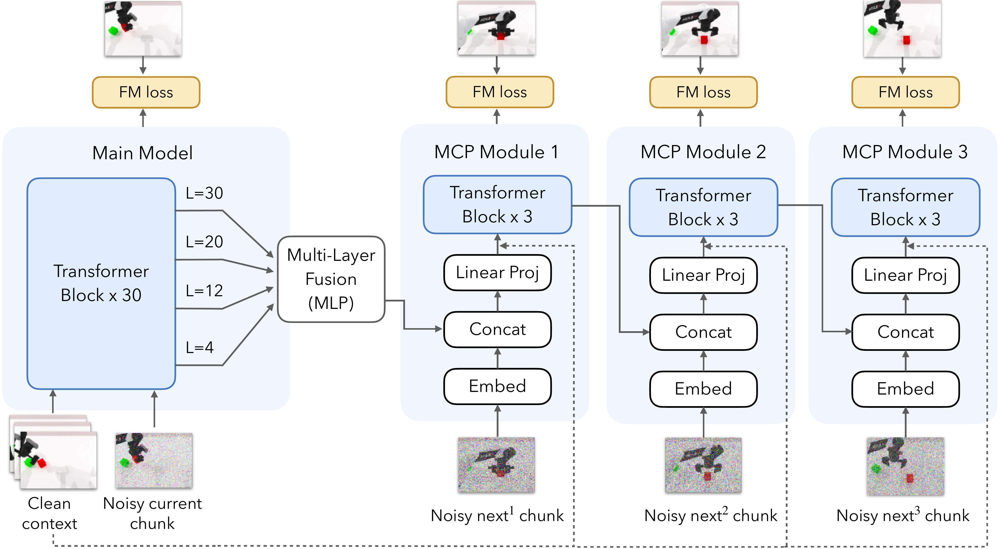
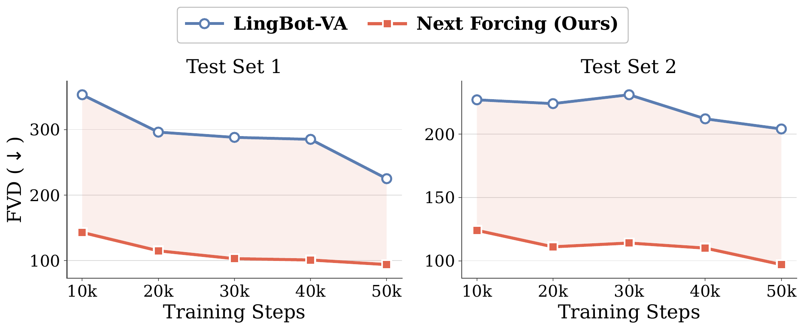

Next Forcing: Causal World Modeling with Multi-Chunk Prediction

We introduce Next Forcing, a multi-chunk prediction framework for causal world modeling. By supervising future video chunks through chained MCP modules, Next Forcing reduces the myopic supervision of autoregressive world models and improves both training convergence and inference efficiency. At inference time, MCP modules predict upcoming chunks in parallel, reducing sequential generation cost and accelerating rollout.
How It Works
Next Forcing extends causal world modeling from one-step prediction to multi-chunk prediction: chained MCP modules expose the backbone to multiple future chunks during training while keeping generation causal.
Multi-chunk prediction
The main model denoises the current chunk, while chained MCP modules predict future chunks (next1, next2, ...) using features from the main model, providing dense temporal supervision during training and enabling parallel chunk prediction at inference.

PhyWorld Benchmark
On physical reasoning videos, Next Forcing produces more consistent dynamics than LingBot-VA under the same causal setup.
General Video Comparison
We evaluate pure video generation after removing the action stream. Next Forcing consistently achieves lower FVD than LingBot-VA throughout training, and the qualitative comparisons below show stronger temporal consistency.

Citation
@article{nextforcing,
title={Next Forcing: Causal World Modeling with Multi-Chunk Prediction},
author={Gangwei Xu and Qihang Zhang and Jiaming Zhou and Xing Zhu and Yujun Shen and Xin Yang and Yinghao Xu},
journal={},
year={2026}
}